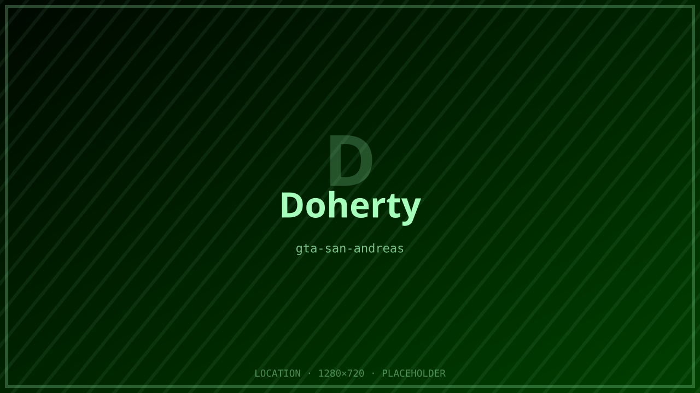
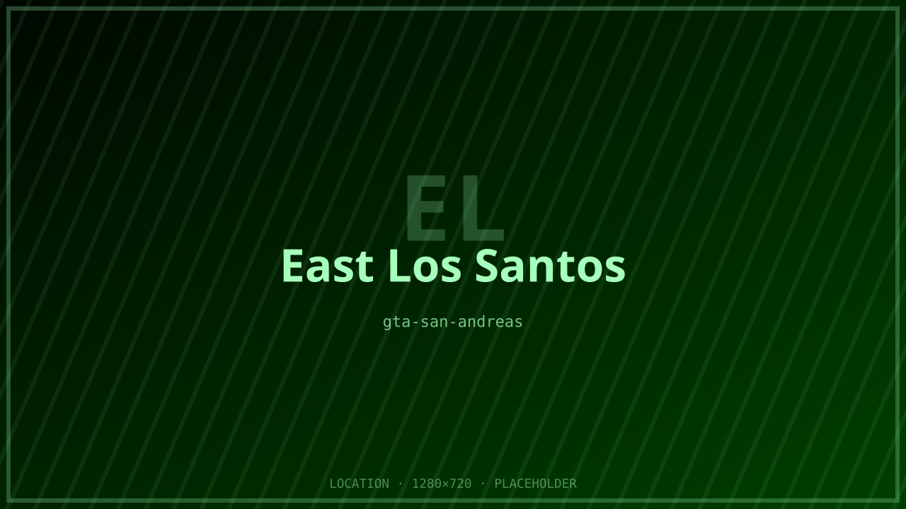
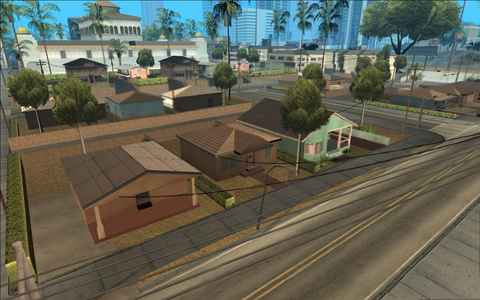
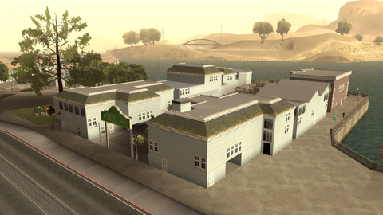

San Andreas
Locations
 Area 69 Landmark
Area 69 Landmark Bone County Region
Bone County Region Caligula's Palace Landmark
Caligula's Palace Landmark Chinatown Neighbourhood
Chinatown Neighbourhood
Doherty Neighbourhood
East Los Santos District Easter Basin District
Easter Basin District Ganton Neighbourhood
Ganton Neighbourhood Glen Park Neighbourhood
Glen Park Neighbourhood
Idlewood Neighbourhood- Jefferson Neighbourhood
 Las Venturas City
Las Venturas City Los Santos City
Los Santos City- Los Santos International Airport Landmark
 Mount Chiliad Landmark
Mount Chiliad Landmark Mulholland Neighbourhood
Mulholland Neighbourhood
Pier 69 Landmark San Andreas Region
San Andreas Region- San Fierro City
 The Strip District
The Strip District Verdant Meadows Landmark
Verdant Meadows Landmark Whetstone Region
Whetstone Region
| Image | Location | Type | Parent area |
|---|---|---|---|
| Area 69 | Landmark | San Andreas |
| Bone County | Region | San Andreas |
| Caligula's Palace | Landmark | Las Venturas |
| Chinatown | Neighbourhood | San Fierro |
| Doherty | Neighbourhood | San Fierro | |
| East Los Santos | District | Los Santos | |
| Easter Basin | District | San Fierro |
| Ganton | Neighbourhood | Los Santos |
| Glen Park | Neighbourhood | Los Santos |
| Idlewood | Neighbourhood | Los Santos | |
| Jefferson | Neighbourhood | Los Santos | |
| Las Venturas | City | San Andreas |
| Los Santos | City | San Andreas |
| Los Santos International Airport | Landmark | Los Santos | |
| Mount Chiliad | Landmark | San Andreas |
| Mulholland | Neighbourhood | Los Santos |
| Pier 69 | Landmark | San Fierro | |
| San Andreas | Region | — |
| San Fierro | City | San Andreas | |
| The Strip | District | Las Venturas |
| Verdant Meadows | Landmark | San Andreas |
| Whetstone | Region | San Andreas |